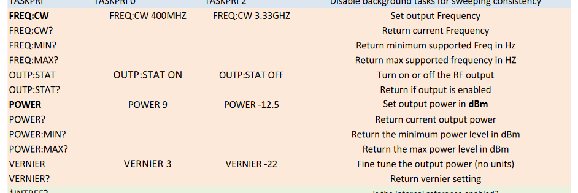

Tutorial: Device Creation#
This tutorial will go through the process of creating a device from scratch using the DSInstruments SG4400L signal generator as an example. The typical use case for this device is for applying a microwave signal for driving an acousto-optic modulator.
This tutorial assumes some basic knowledge of Python and programming in general. More advanced techniques are explained in detail. We welcome feedback if portions of the tutorial are still unfriendly to Python beginners.
Baecon Devices#
Experimental instruments in baecon are children of the base class baecon.device.Device.
This structure forces all equipment to share a few similar attributes and methods.
The rest of a child device class is constructed to support these shared properties. (Nomenclature Note:
“methods” are functions in a class, define using def, and “attributes” are everything
else in the class, referenced by self. This is an major over-simplification, but suits
the needs of this tutorial.)
The shared attributes are
parameters
latent_parameters
configuration
and the shared methods are
write
read
enable_output
We will address what these do later in the tutorial.
The shared methods are enforced using Abstract Base Classes (abc)
module and its method abstractmethod. The decorator @abstractmethod in
baecon.device.Device denotes which methods must be defined in
the child device class.
First Steps: Determine Device Communication#
The first thing to do is figure out how to communicate with the device through
the computer. Many newer and more complex devices, like the
baecon.Devices.Pulse_Streamer or the Balser cameras, the manufacturer
will provide a Python API (application programming interface). Though for
less complex and older devices you may need to use a third-party library
to communicate with the device. Devices using serial, RS-232, GPIB, and TCPIP
can most often be controlled by PyVISA. And
in most cases the devices will use commands in the form of strings, IEEE-488.2
and SCPI being two common structures.
Note: Not all USB devices use string commands for communciation. For example, the TPI signal generators use byte packets. PyVISA can still be used in this case, though working with byte packets is not as nice as simple string commands.
For the SG4400L, as stated in the manual, it uses SCPI commands and can communicate with serial over USB or TCPIP (ethernet).
What Are Device Parameters?#
The baecon.device.Device class has two parameters attributes:
parameters and latent_parameters. Additional attributes can be implemented
in a device as need, for example preparations in the baecon.Device.NIDAQ_Base.
Now these attributes are up to use to decide. The idea behind separating the parameters
is that latent_parameters are for properties of the device are set and not changed often,
such as communication settings (IPaddress, baud rate, etc.) and units for the property
(volts, MHz, etc.). Then, parameters are the properties of the device that change often
like frequency, gain, duration, etc.
The is not a specific method for determining the parameters as all devices are
quite different. A good place to start would be listing what properties of the
device we would like to change during measurements. For the SG4400L,
a start for the parameters would be:
frequency
amplitude/power
on/off
Next, we determine what is need to make a connection to the device. For the
SG4400L, we will implement both serial over USB and TCPIP, which is quite
easy with PyVISA. For these two communication types, at least the following
are required:
IP address (TCPIP)
port number (TCPIP)
port number (serial)
baud rate (serial)
With an idea of what the parameters should be, we can start building the class.
1import pyvisa
2from baecon import Device
3
4class SG4400L(Device):
5
6 def __init__(self, configuration:dict) -> None:
7 self.parameters = {
8 'output_status': "off",
9 'frequency': 250,
10 'amplitude': -30,
11 }
12 self.latent_parameters = {
13 'address': None,
14 "port": None,
15 'baud': 115200,
16 }
17
18 return
The values specified in the __init__ method will be the default for the
class. For parameters, the values are smart start values: start with output
off and low amplitude, with a frequency we typically use in experiments. For
latent_parameters, the default address and port are not important as these
need to be retrieved upon connecting the device to the computer. The default
baud rate is important, as it is the rate specified in the manual.
Device Configuration and Initialization#
The device configuration contains all the information needed to create a device.
The configuration is a dict (elements are key:value) where each key is an
attribute of the device, looking something like
configuration = {
"parameters": {'frequency':...},
"latent_parameters": {...},
"...":{...}
}
The initialization method of the base baecon.device.Device class
will set the attributes of the Device instance to the values in the
configuration dictionary. Child class can access the initialization
method of the parent class by using the super().__init__ method. And more generally
children can access attributes and methods of the base class using super().
However, baecon Devices only use super().
So in the __init__ method of our SG4400L class, we will call
super().__init(configuration) to instantiate the class instance with the
values in the configuration dictionary. Also in this method, the self.configuration
attribute will be defined, which stores the supplied configuration dict.
This attribute is used to easily save the configuration of the device, without
looking through all the other attributes.
Device Connection#
A typical way to manage the connection to a device is to have a method to
connect which returns the object which handles the communication, which in turn
is held as an attribute of the class. Here is the connection method
for the SG4400L
1def connect_to_SG4400L(self):
2 rm = pyvisa.ResourceManager("@py")
3
4 if self.latent_parameters.get("address") is not None and not isinstance(
5 self.latent_parameters.get('port'), str
6 ):
7 device_connection = rm.open_resource(
8 "TCPIP0::"
9 + self.latent_parameters.get('address')
10 + "::"
11 + self.latent_parameters.get('port')
12 + "::SOCKET"
13 )
14 return device_connection
15
16 if self.latent_parameters.get('address') is None and isinstance(
17 self.latent_parameters.get('port'), str
18 ):
19 just_com_number = ''.join(
20 char for char in self.latent_parameters.get('port') if char.isdigit()
21 )
22
23 device_connection = rm.open_resource(
24 'ASRL' + just_com_number + '::INSTR',
25 baud_rate=self.latent_parameters.get('baud'),
26 data_bits=8,
27 )
28 return device_connection
29
30 err_msg = "Double check connection parameters, only supply address and port \
31 for TCPIP, or only port for USB/serial."
32 print(err_msg)
33
34 return
We have two if statements to determine whether the connection parameters are
for TCPIP or USB/serial. Connections are made to the device using pyvisa.ResourceManager
which returns the object which we will use for communication. The syntax is given
in the PyVISA documentation.
The method will print in error message when neither if statements are satisfied. Otherwise
the device_connection is returned.
Note: Since the baud rate for is fixed for the SG4400L , it is not a
value we will want to change at all. So let’s remove baud from latent_parameters
and hardcode the value into the connection function.
Our intitional method for the SG4400L class now looks like the following, with
the addition of the super().__init__ method and the connection method.
1class SG4400L(Device):
2 def __init__(self, configuration: dict) -> None:
3 self.parameters = {
4 'output_status': "off",
5 'frequency': 200,
6 'amplitude': -30,
7 }
8 self.latent_parameters = {
9 'address': None,
10 "port": None,
11 }
12 super().__init__(configuration)
13
14 self.SG4400L_connection = self.connect_to_SG4400L()
15
16 return
Todo
Maybe connection should be an abstractmethod too?
Communicating with the Device#
Communication to the device is limited to the two abstract methods, write and
read. With PyVISA, we communicate based on string messages, so the
two methods we need to implement will look something like this
1def write(self, parameter, value):
2
3 msg = some_function() ## prepare a message to write to the device
4 self.SG4400L_connection.write(msg)
5
6 return
7
8def read(self, parameter, value=None):
9
10 msg = some_other_function() ## prepare a message to read from the device
11 reading = self.SG4400L_connection.query(msg)
12
13 return reading
Note: The name of the method that PyVISA for changing a parameter on the device,
is also called write. This is a coincidence.
Creating Support Methods#
Now to facilitate the write and read methods of the device, we need
to create the support methods. Again, since each device type is different
there is no specific way to do this.
The approach we’ll use here is to create dictionaries of the support methods
that can be accessed by the parameter argument of the write and
read methods.
Ex: Frequency Method#
In the command list for the SG4400L, we see that the frequency accessed with
the FREQ:CW command. A nice thing about SCPI commands, is that the difference
between a write and read command is just a question mark at the end of the command.
The frequency method can look something like this
def freq(self, value, is_read):
units = "MHZ"
value = round(float(value), 6) ## round to Hz
if is_read is True:
message = "FREQ:CW? " + str(value) + units
else:
message = "FREQ:CW " + str(value) + units
return message
We have two arguments: value and is_read. The first is self explanatory;
it’s the value (i.e. frequency) that we want to set the SG4400L to. The
second argument is a boolean to indicate whether to read or write to the device.
If the boolean is true, the a question mark is added to the command. This allows
us to have a single support method for reading and writing the frequency.
Similar methods are create for the amplitude (command POWER) and on/off (command OUTPUT:STAT).
def enable_output(self, value, is_read):
...
return message
def amplitude(self, value, is_read):
...
return message
Support Method Dictionary#
For the write and read method, we want to be able to access the
support function simply with the parameter argument. We can accomplish this using a dictionary
which we’ll call commands.
commands = {'frequency': freq, 'amplitude': amp, 'output_status': enable_output}
The dictionary can be used like this
commands['amplitude']*(value, is_read)
allowing the write method to look like
1 def write(self, parameter, value):
2
3 msg = commands[parameter](value, false)
4 self.SG4400L_connection.write(msg)
5 self.parameters[parameter] = value
6
7 return
The read method is implemented similarly.
Device Configuration#
With all wanted methods implemented, we can look at what the required configuration
for the device.
The first two entries in the configuration dictionary are the same for all
devices, which are name and device. The latter term is simply the class
of the device, SG4400L in this case. The former term name is simply a
working name or nickname for the device, which distinguishes it from other
devices of the same class. For example, if we were using two SG4400L, one for
driving an acousto-optic modulator and one for applying a signal to the sample,
their names could be DSI_AOM and DSI_Signal.
The next entries in the configuration are for parameters and latent_parameters,
which will contain the attributes defined in the __init__ method. The resulting
configuration dictionary looks like
configuration = {
'name': 'DSI_AOM',
'device': 'SG4400L',
'parameters': {
'output_status': 'off',
'frequency': 200,
'amplitude': -10,
},
'latent_parameters': {
'port': 3
}
}
Note that the order of keys in a dictionary does not matter. The order I choose
just made the most sense to me.
If we want to create a SG4400L instance using this dictionary, we would just
call device class
dsi_aom = SG4400L(configuration)
Configuration Files#
Configuration files simply store the configuration dictionary in order to
recreate the instance of the device. The configuration files can be in one of
three formats (for now): .toml, .yml, and .json. The parsing of the
configuration files is implements in baecon.utils. By default, .toml
is used.
For our configuration above, the .toml file looks like
name = 'DSI_AOM'
device = 'SG4400L'
[parameters]
output_status = 'off'
'frequency' = 200
'amplitude' = - 10
[latent_parameters]
port = 3
Note that for .toml files, the order of the entries is important. Items
under brackets will be in sub-dictionary, like for parameters and latent_parameters.
More info here https://toml.io/en/.